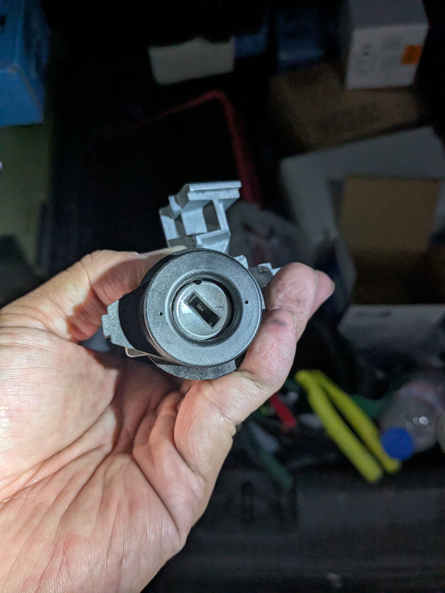

現場診斷：準備更換損壞的福斯原廠點火開關（槍管）總成
鑰匙轉不動？這不是鑰匙的問題
許多福斯車主都遇過這樣的狀況：明明鑰匙插得進去，卻無論如何都無法轉動到啟動位置。這通常是因為點火開關內部的機械組件長期磨損後卡死所致。若硬轉可能會導致鑰匙折斷或內部電子組件受損。

完工測試：新槍管安裝到位，轉動順暢自如
技術核心：現場快速修復方案
針對此類通病，極致核心技師攜帶依車系流程備料親赴現場，執行完整更換作業。
- • 免留車救援： 無需等待原廠慢長的備料期，當場修復。
- • 晶片對接： 確保原本的車輛安全晶片與新槍管線圈完美同步。
- • 專業拆裝： 使用專用工具卸除車輛安全螺絲，不破壞車輛原始結構。
為什麼選擇極致核心 ProCore？
我們深耕歐系車電子與機械車輛安全系統。針對福斯、奧迪常見的槍管卡死問題，提供較有效率、最穩定的現場解決方案，讓您的車輛即刻重回道路。